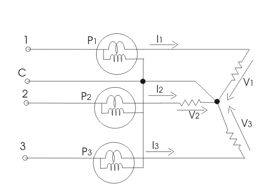
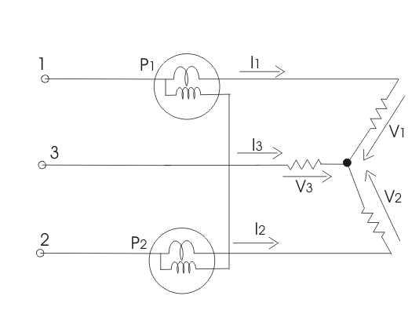
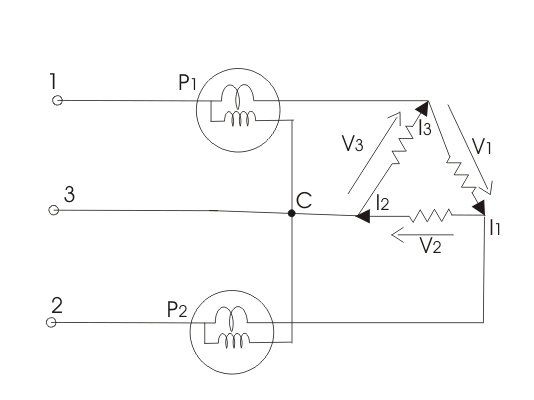
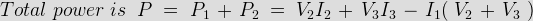
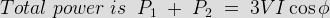

Measurement of Three Phase Power by Two Wattmeters Method
Measurement of Three Phase Power by One Wattmeter Method
Various methods are used measurement of three phase power in three phase circuits on the basis of number of wattmeter used. We have three methods
1. Three wattmeters method
2. Two wattmeters method
3. Single wattmeter method.
Let us discuss one by one each method in detail.
Measurement of Three Phase Power by Three Wattmeters Method
The circuit diagram is shown below-

Here, it is applied to three phase four wire systems, electric current coil of all the three wattmeters marked as one, two and three are connected to respective phases marked as one, two and three. Pressure coils of all the three wattmeter are connected to common point at neutral line. Clearly each wattmeter will give reading as product of phase electric current and line voltage which is phase power. The resultant sum of all the readings of wattmeter will give the total power of the circuit. Mathematically we can
Measurement of Three Phase Power by Two Wattmeters Method
In this method we have two types of connections
(a)Star connection of loads
(b)Delta connection of loads.
When the star connected load, the diagram is shown in below-

For star connected load clearly the reading of wattmeter one is product phase electric current and voltage difference (V2-V3). Similarly the reading of wattmeter two is the product of phase electric current and the voltage difference (V2-V3). Thus the total power of the circuit is sum of the reading of both the wattmeters. Mathematically we can write
but we have I1+I2+I3=0,hence putting the value of I1+I2=-I3.
We get total power as V1I1+V2I2+V3I3.
When delta connected load, the diagram is shown in below

The reading of wattmeter one can be written as
and reading of wattmeter two is

but V1+V2+V3=0, hence expression for total power will reduce to V1I1+V2I2+V3I3.
Measurement of Three Phase Power by One Wattmeter Method
Limitation of this method is that it cannot be applied on unbalanced load. So under this condition we have I1=I2=I3=I and V1=V2=V3=V.
Diagram is shown below:
One Wattmeter Method
Two switches are given which are marked as 1-3 and 1-2, by closing the switch 1-3 we get reading of wattmeter as
Similarly the reading of wattmeter when switch 1-2 is closed is

 by
by